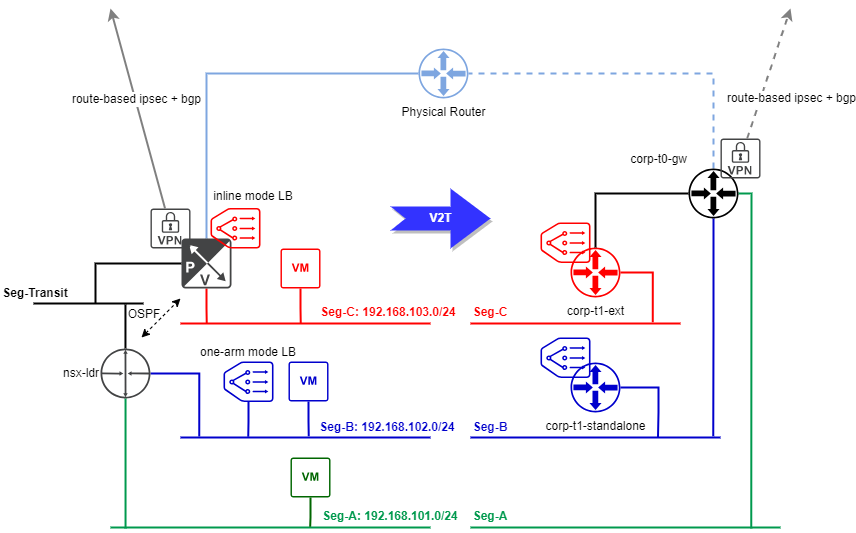

迁移 NSX-V 到 NSX-T: 方案设计
NSX-V 将在 2024 年 1 月停止支持, 在 NSX-V 上运行工作负载的企业会被建议尽快迁移到 NSX-T. 在一个长期稳定运行的企业环境中更换其网络底座通常是一个相当麻烦的过程. 如何尽量减少网络迁移对业务的影响, 将会是很多企业需要考量的问题. 这里将使用一个实际的例子给出不同的迁移方案, 并分析各个方案的复杂性和宕机时间.
设计和现有 NSX-V 等价的 NSX-T 拓扑
下图左侧是一个现存的 NSX-V 环境

简单介绍一下这个拓扑:
- 有三个承载业务的逻辑网段 (Seg-A, Seg-B 和 Seg-C)
- 逻辑网段 Seg-C 直接连接到 Edge Service Gateway (nsx-esg)
- 在 nsx-esg 上启用了 inline 模式的四层负载均衡器, 将流量负载到 Seg-C 上的服务器. 因为这些服务器上运行的应用需要能直接看到客户端 IP, 所以这个负载衡器使用了透明模式. 使用透明模式后, 后端服务器的网关得指向负载均衡器
- 逻辑网段 Seg-A 和 Seg-B 连接到 Logical Distributed Router (nsx-ldr)
- 第二个 Edge Service Gateway (nsx-internal-lb) 上启用了 one-arm 模式的七层负载均衡器, 连接到 Seg-B, 将流量负载到 Seg-B 上的应用服务器
- nsx-esg 的默认路由指向物理路由器, 并且 nsx-esg 上启用了基于路由的 ipsec VPN 和企业的 VPN hub 连接来接入企业内网
- nsx-esg 和 nsx-ldr 连接到 Transit 逻辑网段, 通过 ospf 进行路由交换/重分布
NSX-T 和 NSX-V 之间有很大区别, 其设计相当灵活. 如何将现有的 NSX-V 拓扑转化为功能上等价的 NSX-T 拓扑将会是迁移过程中一项最重要的工作, 相当考验架构师对这两个产品和业务环境的理解. 这里不再展开, 右侧就是等价的 NSX-T 拓扑
- Seg-C 连接到 tier-1 gateway (corp-t1-ext) 将其作为网关, inline 模式的四层透明负载均衡器将关联到 corp-t1-ext. corp-t1-ext 上联到 tier-0 gateway (corp-t0-gw)
- Seg-A 和 Seg-B 连接到 corp-t0-gw 将其作为网关
- 第二个 tier-1 gateway (corp-t1-standalone) 连接到 Seg-B, one-arm 模式的七层负载均衡器关联到 corp-t1-standalone
- corp-t0-gw 使用 HA VIP 连接到物理世界, 其默认路由指向物理路由器. 基于路由的 ipsec VPN 服务将关联到 corp-t0-gw, 接入企业内网
注意: 在当前 NSX-T 版本 (4.1) 中, 负载均衡器必须连接到 tier-1 gateway
可选的迁移方案
整体来说有两类方案. 第一类是就地迁移 (in-place migration), 在原有的基础设施上直接将 NSX-V 替换为 NSX-T. VMware 提供了 Migration Coordinator 工具来协助用户完成这种迁移. 第二类是另外准备一套 NSX-T 环境, 然后使用 enhanced vMotion 将工作负载迁移过去 (lift and shift). 这两类方法都有一些技术细节需要考量.
对于就地迁移, Migration Coordinator 的全自动迁移模式仅支持有限几个非常简单的拓扑结构, 基本上没法使用到实际的企业环境. 即使后来 Migration Coordinator 支持了用户自定义拓扑, 它需要用户指定 ESG 和 tier-X gateway 之间的映射关系. 然而从上面的例子可以看出 ESG 和 tier-X gateway 并不见得就能对应起来 (nsx-esg 的 LB 和 VPN 分别拆到了 tier-1 和 tier-0 上). 此时就需要用户在使用 Migration Coordinator 的同时, 自己也要完成一部分迁移工作. 另外在 Migration Coordinator 迁移 Edge 和 Host 阶段有流量中断. 取决于 Host 数量的多少和并行度设置, 这个停机时间可能会达到几十分钟.
对于 lift and shift 方式, NSX-T 和 NSX-V 的逻辑网段互相独立, 因此为了保证业务的持续性, 需要将 NSX-V 逻辑网段桥接到 NSX-T, 并保证初始时网关只存在于 NSX-V. 在最终迁移完成后, 切换网关到 NSX-T. 这种方法需要准备额外的基础设施, 但是停机时间仅存在于最后切换网关阶段, 这个时间可以很短.
后面将针对 Migration Coordinator 和 lift and shift 迁移方式分别展开